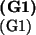

The goal of this deliverable is to select candidate protocols and to present their security properties (goals), (on average, more than 4 properties per protocol). We assess the coverage and relevance of the resulting problem set, with comments of IETF representatives being taken into account.
Our list of candidate protocols includes 33 groups, 79 protocols and 384 security problems.
This list of candidate protocols is the basis for the success criteria for the project, namely,
Not all IETF protocols are equally important for the proper operation of the Internet or for the secure support of applications; nor are all protocols suitable for the kind of formal verification that we plan to perform, either because their strength or weakness depends on the particulars of the cryptographic algorithms used, on policy-based operation, or on their performance. Some protocols are just ``containers'' that pass further unspecified authentication information. Some protocols have so many different layers, exceptions, configurations, and message exchanges that a reasonable abstraction and formalization is beyond the scope of our proposal.
Within these constraints, the purpose of this
deliverable is to evaluate the protocols and select the
candiate problems for formal specification. They are
given by both the protocol description and a set of
security properties the protocol should satisfy. In
general, a protocol is designed to achieve a multitude
of security goals, e.g. secrecy of session key ,
or authentication of a peer in role with strong
agreement on nonce  . We therefore introduce the
notion of a security problem, which is given by
a protocol paired with a security property.
. We therefore introduce the
notion of a security problem, which is given by
a protocol paired with a security property.
Taking into account that in many cases the desired security properties are not explicitly stated in IETF documents, work on this deliverable included both thorough analysis of the protocols and the initiation of a discussion process with IETF representatives, with the selection being based on their comments on coverage and relevance to problem proposals by AVISPA.
Our list of 33 groups and 79 protocols covers most of the recent and ongoing IETF activities on security and security-sensitive applications. In specifying the IETF protocols and their associated problems, we will need to perform a certain amount of abstraction and simplification. Some of this may be necessary to deal with the limitations of our tools (e.g., with respect to the number of concurrent sessions, or agents, or on some data types), and some because certain features of the protocol (such as the cipher suites used, techniques for negotiating them, policy issues, or strength against some denial of service attacks) will be outside the scope of our analysis. Besides this, most of the IETF protocols are not written in a language that is readily translatable to a formal specification. We expect that in many cases there will be a need to discuss the protocols with their developers in order to properly interpret the intended meaning of the (proposed) standards. These discussions are conducted in continuation of the process initiated in this deliverable.
IETF group descriptions are found in:
http://search.ietf.org/html.charters/
and the current drafts can be found in:
http://search.ietf.org/internet-drafts/.